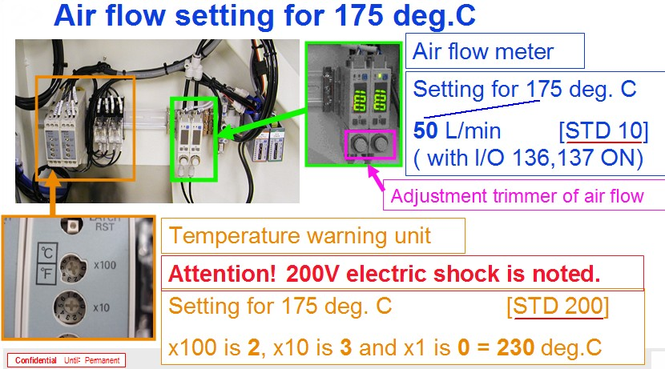

Service History
Subject: NS-8080 socket air blower (JetHeater) Instant Heater for Socket Air 2 unable to heat up
Handler Model: NS-8080
Controller: RC520
Date: 22~23 Dec 2008 (Week 52)
Symptom
For NS8080 Jet heater evaluation, while trying to do temperature calibration for 90 degC, it was found out that socket air 2 was unable to heat up.
Action
Dock plate and load board were removed. After removal, found out that there is air blowing out of it but it is cool air. After tracing the wiring found out that the instant heater for socket air 2 was open circuited. Also did a resistivity check on socket air 1 and found out that the resistance is around 85.3 ohm which helped to confirm that the instant heater failure for socket air 2. Thus, warranty S0345 was raised.
Cause
Instant heater for socket air 2 was open circuited.
Remarks
This is related to 0059-NS8K
Refer email on 26 Apr 2013 on NS8080 Jet Heater (socket blower) installation procedure.
